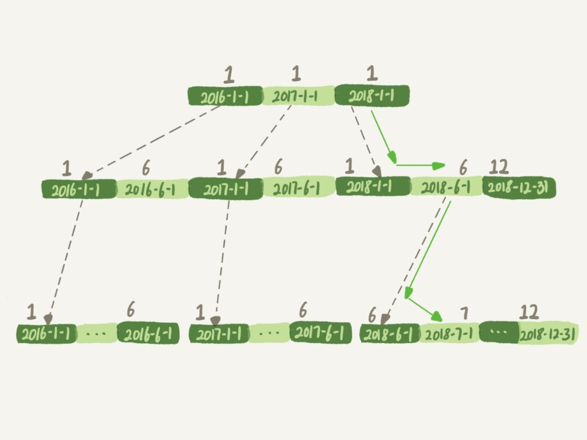
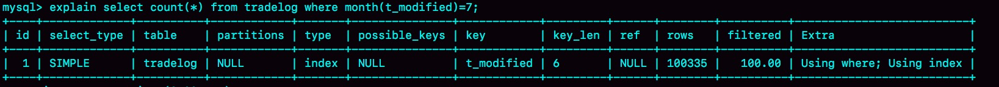
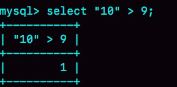
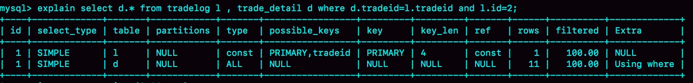
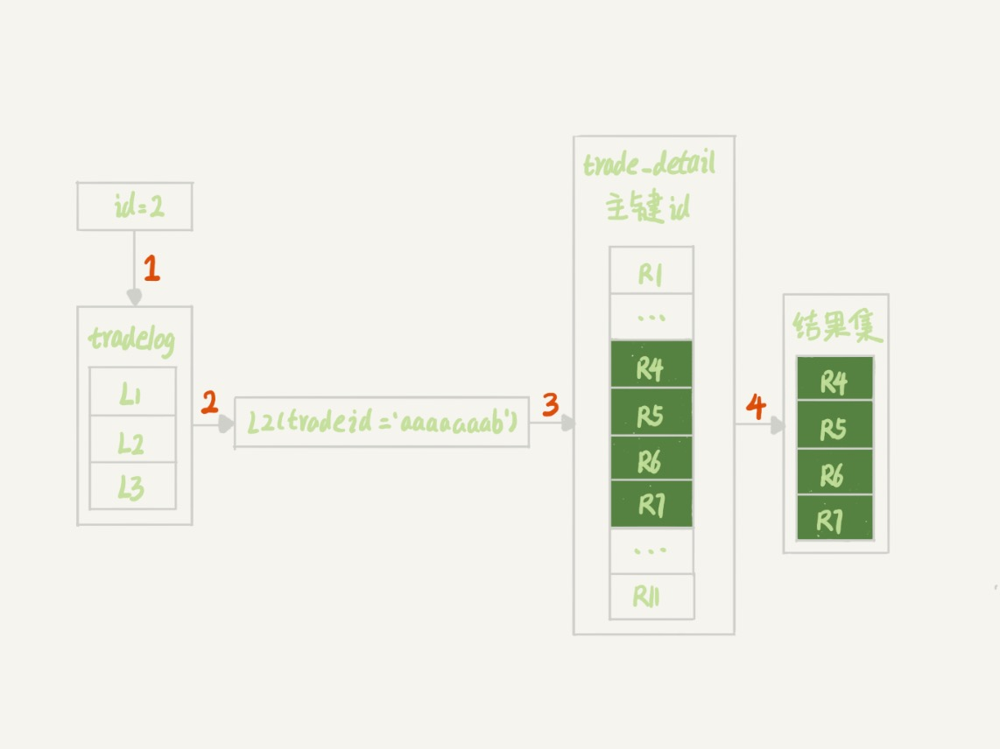
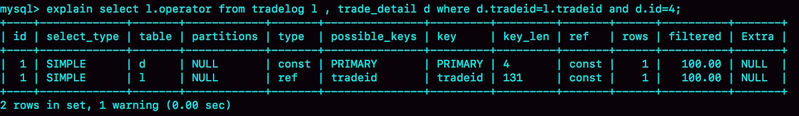
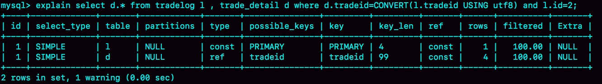

在 MySQL 中，有很多看上去逻辑相同，但性能却差异巨大的 SQL 语句。对这些语句使用不当的话，就会不经意间导致整个数据库的压力变大。 我今天挑选了三个这样的案例和你分享。希望再遇到相似的问题时，你可以做到举一反三、快速解决问题。
### 案例一：条件字段函数操作
假设你现在维护了一个交易系统，其中交易记录表 tradelog 包含交易流水号（tradeid）、交易员 id（operator）、交易时间（t_modified）等字段。为了便于描述，我们先忽略其他字段。这个表的建表语句如下：
mysql> CREATE TABLE `tradelog` (
`id` int(11) NOT NULL,
`tradeid` varchar(32) DEFAULT NULL,
`operator` int(11) DEFAULT NULL,
`t_modified` datetime DEFAULT NULL,
PRIMARY KEY (`id`),
KEY `tradeid` (`tradeid`),
KEY `t_modified` (`t_modified`)
) ENGINE=InnoDB DEFAULT CHARSET=utf8mb4;
假设，现在已经记录了从 2016 年初到 2018 年底的所有数据，运营部门有一个需求是，要统计发生在所有年份中 7 月份的交易记录总数。这个逻辑看上去并不复杂，你的 SQL 语句可能会这么写：
mysql> select count(*) from tradelog where month(t_modified)=7;
由于 t_modified 字段上有索引，于是你就很放心地在生产库中执行了这条语句，但却发现执行了特别久，才返回了结果。 如果你问 DBA 同事为什么会出现这样的情况，他大概会告诉你：如果对字段做了函数计算，就用不上索引了，这是 MySQL 的规定。 现在你已经学过了 InnoDB 的索引结构了，可以再追问一句为什么？为什么条件是 where t_modified=’2018-7-1’的时候可以用上索引，而改成 where month(t_modified)=7 的时候就不行了？ 下面是这个 t_modified 索引的示意图。方框上面的数字就是 month() 函数对应的值。

如果你的 SQL 语句条件用的是 where t_modified='2018-7-1’的话，引擎就会按照上面绿色箭头的路线，快速定位到 t_modified=’2018-7-1’需要的结果。
实际上，B+ 树提供的这个快速定位能力，来源于同一层兄弟节点的有序性。
但是，如果计算 month() 函数的话，你会看到传入 7 的时候，在树的第一层就不知道该怎么办了。
也就是说，对索引字段做函数操作，可能会破坏索引值的有序性，因此优化器就决定放弃走树搜索功能。需要注意的是，优化器并不是要放弃使用这个索引。
在这个例子里，放弃了树搜索功能，优化器可以选择遍历主键索引，也可以选择遍历索引 t_modified，优化器对比索引大小后发现，索引 t_modified 更小，遍历这个索引比遍历主键索引来得更快。因此最终还是会选择索引 t_modified。
接下来，我们使用 explain 命令，查看一下这条 SQL 语句的执行结果。

key=”t_modified”表示的是，使用了 t_modified 这个索引；我在测试表数据中插入了 10 万行数据，rows=100335，说明这条语句扫描了整个索引的所有值；Extra 字段的 Using index，表示的是使用了覆盖索引。 也就是说，由于在 t_modified 字段加了 month() 函数操作，导致了全索引扫描。为了能够用上索引的快速定位能力，我们就要把 SQL 语句改成基于字段本身的范围查询。按照下面这个写法，优化器就能按照我们预期的，用上 t_modified 索引的快速定位能力了。
mysql> select count(*) from tradelog where
-> (t_modified >= '2016-7-1' and t_modified<'2016-8-1') or
-> (t_modified >= '2017-7-1' and t_modified<'2017-8-1') or
-> (t_modified >= '2018-7-1' and t_modified<'2018-8-1');
当然，如果你的系统上线时间更早，或者后面又插入了之后年份的数据的话，你就需要再把其他年份补齐。 到这里我给你说明了，由于加了 month() 函数操作，MySQL 无法再使用索引快速定位功能，而只能使用全索引扫描。 不过优化器在个问题上确实有“偷懒”行为，即使是对于不改变有序性的函数，也不会考虑使用索引。比如，对于 select * from tradelog where id + 1 = 10000 这个 SQL 语句，这个加 1 操作并不会改变有序性，但是 MySQL 优化器还是不能用 id 索引快速定位到 9999 这一行。所以，需要你在写 SQL 语句的时候，手动改写成 where id = 10000 -1 才可以。
### 案例二：隐式类型转换
接下来我再跟你说一说，另一个经常让程序员掉坑里的例子。 我们一起看一下这条 SQL 语句：
mysql> select * from tradelog where tradeid=110717;
交易编号 tradeid 这个字段上，本来就有索引，但是 explain 的结果却显示，这条语句需要走全表扫描。你可能也发现了，tradeid 的字段类型是 varchar(32)，而输入的参数却是整型，所以需要做类型转换。
那么，现在这里就有两个问题：
- 数据类型转换的规则是什么？
- 为什么有数据类型转换，就需要走全索引扫描？ 先来看第一个问题，你可能会说，数据库里面类型这么多，这种数据类型转换规则更多，我记不住，应该怎么办呢？
这里有一个简单的方法，看 select “10” > 9 的结果：
- 如果规则是“将字符串转成数字”，那么就是做数字比较，结果应该是 1；
- 如果规则是“将数字转成字符串”，那么就是做字符串比较，结果应该是 0。 验证结果如图 3 所示。

从图中可知，select “10” > 9 返回的是 1，所以你就能确认 MySQL 里的转换规则了：在 MySQL 中，字符串和数字做比较的话，是将字符串转换成数字。 这时，你再看这个全表扫描的语句：
mysql> select * from tradelog where tradeid=110717;
就知道对于优化器来说，这个语句相当于：
mysql> select * from tradelog where CAST(tradid AS signed int) = 110717;
也就是说，这条语句触发了我们上面说到的规则：对索引字段做函数操作，优化器会放弃走树搜索功能。 现在，我留给你一个小问题，id 的类型是 int，如果执行下面这个语句，是否会导致全表扫描呢？
select * from tradelog where id="83126";
你可以先自己分析一下，再到数据库里面去验证确认。 接下来，我们再来看一个稍微复杂点的例子。
### 案例三：隐式字符编码转换
假设系统里还有另外一个表 trade_detail，用于记录交易的操作细节。为了便于量化分析和复现，我往交易日志表 tradelog 和交易详情表 trade_detail 这两个表里插入一些数据。
mysql> CREATE TABLE `trade_detail` (
`id` int(11) NOT NULL,
`tradeid` varchar(32) DEFAULT NULL,
`trade_step` int(11) DEFAULT NULL, /* 操作步骤 */
`step_info` varchar(32) DEFAULT NULL, /* 步骤信息 */
PRIMARY KEY (`id`),
KEY `tradeid` (`tradeid`)
) ENGINE=InnoDB DEFAULT CHARSET=utf8;
insert into tradelog values(1, 'aaaaaaaa', 1000, now());
insert into tradelog values(2, 'aaaaaaab', 1000, now());
insert into tradelog values(3, 'aaaaaaac', 1000, now());
insert into trade_detail values(1, 'aaaaaaaa', 1, 'add');
insert into trade_detail values(2, 'aaaaaaaa', 2, 'update');
insert into trade_detail values(3, 'aaaaaaaa', 3, 'commit');
insert into trade_detail values(4, 'aaaaaaab', 1, 'add');
insert into trade_detail values(5, 'aaaaaaab', 2, 'update');
insert into trade_detail values(6, 'aaaaaaab', 3, 'update again');
insert into trade_detail values(7, 'aaaaaaab', 4, 'commit');
insert into trade_detail values(8, 'aaaaaaac', 1, 'add');
insert into trade_detail values(9, 'aaaaaaac', 2, 'update');
insert into trade_detail values(10, 'aaaaaaac', 3, 'update again');
insert into trade_detail values(11, 'aaaaaaac', 4, 'commit');
这时候，如果要查询 id=2 的交易的所有操作步骤信息，SQL 语句可以这么写：
/* 语句 Q1*/
mysql> select d.* from tradelog l, trade_detail d where d.tradeid=l.tradeid and l.id=2;

我们一起来看下这个结果：
- 第一行显示优化器会先在交易记录表 tradelog 上查到 id=2 的行，这个步骤用上了主键索引，rows=1 表示只扫描一行；
- 第二行 key=NULL，表示没有用上交易详情表 trade_detail 上的 tradeid 索引，进行了全表扫描。 在这个执行计划里，是从 tradelog 表中取 tradeid 字段，再去 trade_detail 表里查询匹配字段。因此，我们把 tradelog 称为驱动表，把 trade_detail 称为被驱动表，把 tradeid 称为关联字段。 接下来，我们看下这个 explain 结果表示的执行流程：

图中：
- 是根据 id 在 tradelog 表里找到 L2 这一行；
- 是从 L2 中取出 tradeid 字段的值；
- 是根据 tradeid 值到 trade_detail 表中查找条件匹配的行。explain 的结果里面第二行的 key=NULL 表示的就是，这个过程是通过遍历主键索引的方式，一个一个地判断 tradeid 的值是否匹配。 进行到这里，你会发现第 3 步不符合我们的预期。因为表 trade_detail 里 tradeid 字段上是有索引的，我们本来是希望通过使用 tradeid 索引能够快速定位到等值的行。但，这里并没有。 如果你去问 DBA 同学，他们可能会告诉你，因为这两个表的字符集不同，一个是 utf8，一个是 utf8mb4，所以做表连接查询的时候用不上关联字段的索引。这个回答，也是通常你搜索这个问题时会得到的答案。 但是你应该再追问一下，为什么字符集不同就用不上索引呢？ 我们说问题是出在执行步骤的第 3 步，如果单独把这一步改成 SQL 语句的话，那就是：
mysql> select * from trade_detail where tradeid=$L2.tradeid.value;
其中，$L2.tradeid.value 的字符集是 utf8mb4。 参照前面的两个例子，你肯定就想到了，字符集 utf8mb4 是 utf8 的超集，所以当这两个类型的字符串在做比较的时候，MySQL 内部的操作是，先把 utf8 字符串转成 utf8mb4 字符集，再做比较。 这个设定很好理解，utf8mb4 是 utf8 的超集。类似地，在程序设计语言里面，做自动类型转换的时候，为了避免数据在转换过程中由于截断导致数据错误，也都是“按数据长度增加的方向”进行转换的。 因此， 在执行上面这个语句的时候，需要将被驱动数据表里的字段一个个地转换成 utf8mb4，再跟 L2 做比较。 也就是说，实际上这个语句等同于下面这个写法：
select * from trade_detail where CONVERT(traideid USING utf8mb4)=$L2.tradeid.value;
CONVERT() 函数，在这里的意思是把输入的字符串转成 utf8mb4 字符集。 这就再次触发了我们上面说到的原则：对索引字段做函数操作，优化器会放弃走树搜索功能。 到这里，你终于明确了，字符集不同只是条件之一，连接过程中要求在被驱动表的索引字段上加函数操作，是直接导致对被驱动表做全表扫描的原因。 作为对比验证，我给你提另外一个需求，“查找 trade_detail 表里 id=4 的操作，对应的操作者是谁”，再来看下这个语句和它的执行计划。 mysql>select l.operator from tradelog l , trade_detail d where d.tradeid=l.tradeid and d.id=4;

这个语句里 trade_detail 表成了驱动表，但是 explain 结果的第二行显示，这次的查询操作用上了被驱动表 tradelog 里的索引 (tradeid)，扫描行数是 1。 这也是两个 tradeid 字段的 join 操作，为什么这次能用上被驱动表的 tradeid 索引呢？我们来分析一下。 假设驱动表 trade_detail 里 id=4 的行记为 R4，那么在连接的时候（图 5 的第 3 步），被驱动表 tradelog 上执行的就是类似这样的 SQL 语句：
select operator from tradelog where traideid =$R4.tradeid.value;
这时候 $R4.tradeid.value 的字符集是 utf8, 按照字符集转换规则，要转成 utf8mb4，所以这个过程就被改写成：
select operator from tradelog where traideid =CONVERT($R4.tradeid.value USING utf8mb4);
你看，这里的 CONVERT 函数是加在输入参数上的，这样就可以用上被驱动表的 traideid 索引。 理解了原理以后，就可以用来指导操作了。如果要优化语句
select d.* from tradelog l, trade_detail d where d.tradeid=l.tradeid and l.id=2;
的执行过程，有两种做法： 比较常见的优化方法是，把 trade_detail 表上的 tradeid 字段的字符集也改成 utf8mb4，这样就没有字符集转换的问题了。
alter table trade_detail modify tradeid varchar(32) CHARACTER SET utf8mb4 default null;
如果能够修改字段的字符集的话，是最好不过了。但如果数据量比较大， 或者业务上暂时不能做这个 DDL 的话，那就只能采用修改 SQL 语句的方法了。
mysql> select d.* from tradelog l , trade_detail d where d.tradeid=CONVERT(l.tradeid USING utf8) and l.id=2;

这里，我主动把 l.tradeid 转成 utf8，就避免了被驱动表上的字符编码转换，从 explain 结果可以看到，这次索引走对了。
### 小结
今天我给你举了三个例子，其实是在说同一件事儿，即：对索引字段做函数操作，可能会破坏索引值的有序性，因此优化器就决定放弃走树搜索功能。 第二个例子是隐式类型转换，第三个例子是隐式字符编码转换，它们都跟第一个例子一样，因为要求在索引字段上做函数操作而导致了全索引扫描。 MySQL 的优化器确实有“偷懒”的嫌疑，即使简单地把 where id+1=1000 改写成 where id=1000-1 就能够用上索引快速查找，也不会主动做这个语句重写。 因此，每次你的业务代码升级时，把可能出现的、新的 SQL 语句 explain 一下，是一个很好的习惯。 今天我留给你的课后问题是，你遇到过别的、类似今天我们提到的性能问题吗？你认为原因是什么，又是怎么解决的呢？ @封建的风 提到一个有趣的场景，值得一说。我把他的问题重写一下，表结构如下：
mysql> CREATE TABLE `table_a` (
`id` int(11) NOT NULL,
`b` varchar(10) DEFAULT NULL,
PRIMARY KEY (`id`),
KEY `b` (`b`)
) ENGINE=InnoDB;
假设现在表里面，有 100 万行数据，其中有 10 万行数据的 b 的值是’1234567890’， 假设现在执行语句是这么写的:
mysql> select * from table_a where b='1234567890abcd';
这时候，MySQL 会怎么执行呢？ 最理想的情况是，MySQL 看到字段 b 定义的是 varchar(10)，那肯定返回空呀。可惜，MySQL 并没有这么做。那要不，就是把’1234567890abcd’拿到索引里面去做匹配，肯定也没能够快速判断出索引树 b 上并没有这个值，也很快就能返回空结果。 但实际上，MySQL 也不是这么做的。
这条 SQL 语句的执行很慢，流程是这样的：
- 在传给引擎执行的时候，做了字符截断。因为引擎里面这个行只定义了长度是 10，所以只截了前 10 个字节，就是’1234567890’进去做匹配；这样满足条件的数据有 10 万行；
- 因为是 select *， 所以要做 10 万次回表；
- 但是每次回表以后查出整行，到 server 层一判断，b 的值都不是’1234567890abcd’;
- 返回结果是空。 这个例子，是我们文章内容的一个很好的补充。虽然执行过程中可能经过函数操作，但是最终在拿到结果后，server 层还是要做一轮判断的。